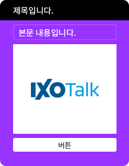
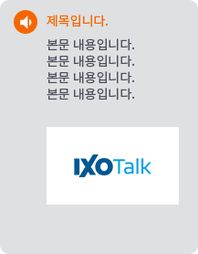
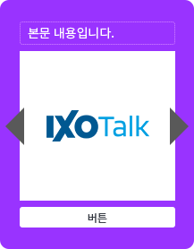

답변에 맞는 챗봇UI를 선택하신 후, 상세 구성을 제작할 수 있습니다.
-
기본 유형

- 일반적인 챗봇을 구성하는 UI
- 각 상세 모듈 추가/삭제 등을 통해서, 챗봇 운영자가 원하는 형태의 답변을 제공할 수 있음.
-
알림풍선 유형

- 알림 정보성 답변 UI
- 챗봇에서 사용자에게 알림성 정보를 전달하는 답변 유형입니다.
제목과 설명 내용, 이미지로 구성되어 있습니다.
-
캐로셀 유형

- 캐로셀로 구성되는 UI
- 여러 개의 답변을 한번에 보여주기 위한 가로형 답변 UI입니다.
텍스트와 이미지, 버튼이 한 쌍으로 구성하여, 다중 답변을 보여주게 됩니다.
-
커스템제작 유형
- 커스템 제작을 위한 UI
- 전문 개발자를 위한 커스템 제작입니다. 개발자가 직접 코딩을 하여, 원하는 형태로 자유롭게 답변 유형을 제작할 수 있습니다.